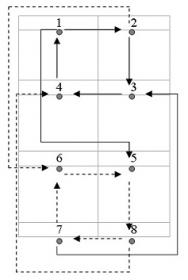
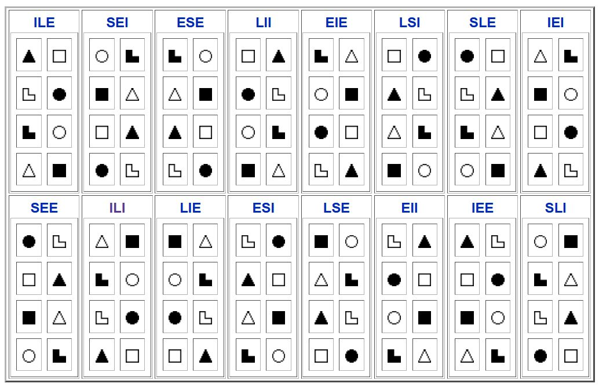

Model A¶
Introduction¶
Model A is a detailed model of human information metabolism named after Aushra Augustinavichiute who has created it by incorporating Carl Jung’s work on Psychological Types with Antoni Kępiński’s theory of information metabolism. This model consists of 8 functions each of which works with one of the 8 information aspects. Different combinations of information aspects in different functions of model A create the 16 distinct types of information metabolism of Socionics – i.e. the 16 Socionics TIMs.
Model A forms the foundation of classical socionics. Over the past decades, various improvements and changes to model A, as well as alternative models have been proposed.
Structure of Model A¶
A detailed representation of Model A is given in the table below. The rest of this page covers extended descriptions of its constituents.
Inert |
Contact |
Properties |
||
|---|---|---|---|---|
1. Program
base
4D
|
2. Creative
instrumental
3D
|
strong
conscious
valued
verbal
|
Mental Ring |
|
4. Mobilizing
painful
1D
|
3. Role
regulatory
2D
|
weak
conscious
not valued
nonverbal
|
Mental Ring |
|
6. Activating
referent
2D
|
5. Suggestive
credulous
1D
|
weak
unconscious
valued
verbal
|
Vital Ring |
|
7. Ignoring
Limiting
3D
|
8. Background
demonstrative
4D
|
strong
unconscious
not valued
nonverbal
|
Vital Ring |
Eight Functions¶
Model A is typically drawn as a 2x4 matrix as is shown in the first table below. Each of the 8 functional slots is taken up by 1 information aspect to build the model A for a particular type, as is shown in the second table. The functions follow standard numbering from 1 to 8. The elements are often designated by their corresponding geometric symbols.
Note
It is important to note that the numbering of functions in socionics does not indicate their “strength”, rather their position and role within the model A.
|
|
|
|
|
|
|
|
 (leading)
(leading) (creative)
(creative) (vulnerable)
(vulnerable) (role)
(role) (activating)
(activating) (suggestive)
(suggestive) (ignoring)
(ignoring) (demonstrative)
(demonstrative)The placement of information aspects in the 8 functional slots is not random and follows certain rules for positioning. Once we specify the aspects of the first two functions, this is enough information to specify all of the remaining aspects and the exact socionics TIM.
As can be seen from the table above, each socionics type perceives and processes all of the aspects of reality, but depending on the positioning of those aspects in this TIM’s model A this happens to varying degrees of clarity, depth, and comfort. Model A can be figuratively pictured as a round tower with eight windows that face in different directions. Some windows are large and clear; from these windows a person can see far and in great detail - these are the strong functions. Other windows are small and blurry, allowing to see only vague contours, or not even distinguish whether it’s light or dark outside - these are the weak functions. The size and properties of each window are individual for each person, but, at the same time, there are certain rules that concern their positioning that specify the 16 distinct types of information metabolism of socionics.
By combining the characteristics of an element with the properties of its functional position of Model A, we can generalize traits and attitudes manifested by socionics TIMs that have that particular element in that particular position. Thus, we can use Model A as an abstract framework to generate types descriptions of 16 TIMs of socionics. Furthermore, socionics intertype relations can be also be analyzed and understood on basis of Model A. However, as a rule, significant amount of practical observation and introspection is necessary to understand how this theoretical model applies in practice.
Functional Properties and Dichotomies¶
The 8 functions of the model A can be distinguished by the functional dichotomies that impart certain set of properties on each function.
The functional dichotomy of strong-weak is related to the dimensionality of functions, where 3- and 4-dimensional functions are considered to be strong, and 1- and 2-dimensional functions are called weak. The idea of dimensionality of functions was introduced by A. V. Bukalov in 1989 by analogy with the dimension of functions in mathematics. Later this concept was used by V. D. Yermak. According to this concept, the “strength” of functions of model A corresponds to how many parameters are accessible to it in processing information, up to four.
Inert |
Contact |
|
|---|---|---|
Four Blocks¶
The 8 functions of model A are further grouped into four blocks each containing 2 functions in a row. Each block contains one rational and one irrational element, one Extroverted and one Introverted element. Traditionally it is thought that the functions of each block are somehow connected and codependent with each other. Other socionists maintain that the functions manifest themselves separately.
Aushra Augusta has chosen the terms Ego, Super-ego, Id, and Super-id for the names of the four blocks by analogy with Sigmund Freud’s model of the psyche.
Note
It is important to note that the meaning of these terms in context of socionics model is somewhat different than their meaning in the practice of psychoanalysis.
Ego Block¶
Ego Block – is the block of strong, mental, conscious functions: leading function and creative function. The aspects of the Ego Block functions are valued within the quadrant of a given type.
The Ego block is a socially demonstrative, creative block that forms the core of the TIM and is usually associated with an individual’s ego - their inner “I”. This is an area of conscious competence and individualism, as well as conscious and active observation and influence on the world. A person is usually the most confident, informed, and energetically active on their Ego block functions. On this block, we rarely experience feelings of remorse, doubt, and shame; neither does this block shift responsibilities or blame onto others.
The Ego block comprises a point of accurate self-assessment and demands social recognition that is adequate to its abilities. The activities of the functions of this block are socially directed - people easily share their experience and lend help to others from their Ego block. The functions in this block rarely “get tired”, thus a person can fill in most of their free time by activities pertaining to the functions of this block. Often people pick their primary sphere of activity and occupation basing on the functions of the Ego block.
The Ego block is believed to be fully formed by the time a person reaches 24-25 years of age. Some socionists have noticed that this observation coincides with C. G. Jung’s commentary: “The first half of [a person’s] life is devoted to forming a healthy ego, the second half is going inward and letting go of it.”
Note
It should be noted that while this is the strongest block of a TIM, the accuracy and correctness of its estimates is strongly influenced by a person’s level of experience, knowledge, and intelligence. It is quite possible for the Ego block functions to make mistakes. Still, a person rarely feels deeply ashamed or inadequate on this block even if they’ve blundered and recovers with ease.
The two functions of the Ego Block, the leading function and the creative one, are said to constitute the “formula of the type”. These are the most independent and confident functions. Activity of this block always carries an unfinished, open-ended nature. On this block a person says: “I know what I need the best. If some changes or improvements are needed, I will implement them without outside help.”
The program, base, or leading function directs the global perception and general lifestyle of a person i.e. it constitutes the “program” for a person’s life. The perception and filtering of reality through the base function happens so naturally and imperceptibly that often it is difficult for an individual to imagine that the surrounding reality can be perceived any differently. The base function is always subtly present and “coloring” an individual’s perceptions from a very early age. Its presence as a constant stream of information without strong variations makes it difficult to notice in others, as well as in oneself, despite it being the strongest and most conscious function. For typing purposes, a person needs to be considered “on global scale” to determine the activity and orientation of their “program” function. It could be said that people “embody” their leading function rather than express it in daily situations. People often have strong ego identification with their “program” function as it is assumed to be a part of their identity.
The leading function is inert and relatively inflexible. It changes its notions and outlooks slowly and gradually, especially for people of leading function subtypes. Often, information that is capable of causing such changes evokes resistance and rejection from the leading function, and is therefore integrated very slowly. Such integration has the highest chance of taking place typically under the conditions of repeated and prolonged exposure to the leading function of one’s dual TIM.The creative or implementation function is another strong, conscious function. However, in contrast to the inert leading function, it is flexible and contact. Creative function does not have an “integrated and complete” picture of the world, but rather considers different options available in a given situation with the goal of finding an appropriate solution for the situation that is satisfactory and supports the person’s base function. Creative function gets actively expressed in conversations and everyday situations. Its expressions are poignant, designed to leverage some effect in daily situations, and often draw the immediate attention of others. Creative function requires some effort to be put forth and thus “choosy” as to when it is expressed; it may “lie in waiting” for a while to become realized in smaller everyday situations. Being another strong function in the Ego block that is openly expressed, it is oft mistaken for the leading function, especially for people of creative function subtypes.
Super-ego Block¶
Super-ego block – is the block of weak, mental, conscious functions: vulnerable function and role function. The aspects for the Super-ego functions are not valued within the quadrant of a given type.
This block is known as the block of “social control” and the block of “social conformism”. It can be likened to the “social conscience” of an individual: this block’s activity is directed primarily at fulfillment of norms and standards that other people set for the individual. Any evaluations and instructions on this block the individual seeks external to himself, from other people who surround him or her; here the individual “surrenders” himself to the direction and control of society, consciously admitting own weaknesses on this block. The absence of “painful irritation” on 4th vulnerable function is considered to be a sign that the individual satisfies and meets the expectations of others; each person wishes that his or her understanding of the 4th vulnerable aspect would coincide with the “public opinion”. According to interpretations of some socionics sources, this is the block through which a society controls a person.
Direct influences on Super-ego block are typically the most consciously discomforting to a person. At the same time, the person is consciously aware of his or her weaknesses in this area, and realizes that he or she must make up and react somehow. This reaction, as a rule, comes from the strong functions of their Ego block. Thus, influences on the Super-ego block make a person mobilize and consciously activate the functions of his or her Ego block for a response.
The Super-ego block never argues; it only reasons not adding anything new but only tallying up all that is known to the individual on its aspects. This block is “omnivorous” and readily absorbs all information that pertains to its aspects, at the same time showing a subpar differentiation of information.
In some literature this block is referred to as the “teenager” block - from this block the person tries to show to others: “I’m just like you. I am one of your own.” - which is reminiscent of socialization style of people in their teenage years, when a person tries to show their belonging to a particular peer group. It is also believed that this block fully forms during adolescent years (12-18).
The role function is a sufficiently flexible, contact, yet weak function. It may be called the “reserve” function, because it comes to aid when the possibilities and capabilities of base and creative functions are insufficient and in new situations when a person needs to be receptive of all kinds of information. However, in contrast to the creative function, the role function does not seek new options and solutions but chooses the most appropriate one from the set of already accumulated set of standards and norms. Prolonged need to focus on this function leads to feelings of discomfort and tiredness. At the same time, people periodically have a desire to “show themselves” on this function, to prove that they are up to standard and “no worse than others”, and to learn the means and methods for accomplishing this.
The painful function, which is also called the point of least resistance, is the most problematic of all socionics functions. This function is the weakest of the conscious functions, and its related aspects are often interpreted by a person as a significant personal issue or defect. Information received on painful function is often distorted and misinterpreted by a person, often too much exaggerated or too underestimated. In John Beebe’s model this function is associated with the “Trickster” archetype. Getting confronted with the need to deal with one’s own painful function, a person experiences a lot of uncertainty, senses his or her inability to accurately evaluate one’s own notions and actions and their effectiveness, and feels like he or she doesn’t know how to proceed correctly. Such realizations are often accompanied by feelings of anxiety and discomfort, a person may even start panicking. Any need to focus on the painful function leads to quick exhaustion, a sense of being drained out of energy. If some positive result is nevertheless attained on painful function, this is perceived as a major achievement and compliment by a person, and is usually grounds for enjoyment.
The painful function is inert and quite inflexible. It intakes new information with difficulty, particularly when this information doesn’t match previous experience.
Super-id Block¶
Super-id block – is the block of weak, vital, unconscious functions: activating function and suggestive function. The aspects of the Super-id block are valued within the quadrant of a given type. They constitute the Ego Block functions of one’s dual type.
The Super-id block is sometimes called the “child” block in socionics literature, because this is the block of weak unconscious functions on which it is difficult to engage in active, conscious, purposeful activity. A person most often is a “consumer” of information on this block, readily absorbing any related information from others, and even provoking others to produce such information, which is best accomplished by their dual TIM. At the same time, a person poorly discerns information on this block, and tends to be overly trusting of the arguments and evaluations provided by others. This is especially descriptive of the suggestive function, which has been called “suggestive” because a person is too suggestible, malleable, and easily directed on this element, having weak ability to evaluate incoming information on this function.
In general, people need extensive advice and support on the aspects of their Super-id bock, which they typically receive from others who have these information aspects as part of their Ego block. To think for oneself and resolve problems independently on this block the person “hasn’t the time” and little understanding of own wishes and needs; thus a person usually gives a lot of freedom to others, including their partner, over these aspects.
Having little awareness of one’s own needs on this block, the person does not pose their own interests on this block in opposition to others; certain victimness and sacrificial behavior can be observed on this block, as well as a need for external regulation and control. If a person does not receive support and high quality positive advice on these aspects, and experiences inadequacy on own suggestive and activating functions, a feeling of “blaming others” begins to develop over this block. In this case, a person start accusing people around for not living up to his expectations, withdrawing from society, and placing all responsibility on others. (As an example: An elderly lonely ILE man was no longer able to sufficiently take care of his living quarters, where he also kept a monkey as a pet and company. As the items and trash accumulated in his flat, and he started receiving complaints from other residents of the complex, he blamed them and his neighbors for not helping him out with upkeep and maintenance of his apartment.)
The suggestive function is one of the weakest functions of model A. Information received on this function is not subjected to much critical thinking and independent evaluation by a person, similar to the painful function. However, in contrast to the painful function, information relayed on suggestive aspect does not cause rejection, discomfort, and tiredness, but conversely this information evokes appreciation and trust and is received by a person as something very valuable and important. Nevertheless a person usually has somewhat of a passive attitude towards this function, expecting others to fulfill its needs. A person’s formula for treating this function is usually: “If it doesn’t hurt, I don’t notice it,” but once problems arise a person becomes exceptionally dependent on others on this aspect and receptive to their advice and directions. This is most pronounced in people of leading function subtypes.
This function is sufficiently tolerant of criticisms of others, even harsh ones, which it even takes for signs of love and care. It is experienced as more sensitive and vulnerable for people of leading function subtypes.
Influences on his function can change the inner state and outlook on the world of a person by slightly adjusting the notions of the inert base function. However a person has only weak ability to influence him or herself on this aspect, and this is typically accomplished by people of his or her dual TIM.The activating function is also sometimes called the “referent”. This is another weak valued function on which a person willingly receives help and support of others, similar to the suggestive. In contrast to suggestive function, information relayed on this aspects gets partial critical evaluation and is checked against some internal standards and notions to determine whether this information is acceptable to the individual and should be accepted or rejected. A great deal of unconscious evaluation of partners in terms of whether they are acceptable happens on this function. A person’s activity level on this aspect depends on other people - if there is support, then a person’s activity may even surpass those around him, however, if there is no support - the person vanishes without a trace.
Unlike the suggestive function, the activating function often reacts painfully to any perceived criticisms and remarks, and expects only silent understanding and support (this effect is somewhat lessened for people of leading function subtypes, who exhibit higher tolerance of criticism of their activating and vulnerable functions). This function is inert and somewhat inflexible, however, it has greater situational flexibility than the base function. The aspect of this function gets adjusted by the creative function of one’s dual TIM appropriately to the situation.
Id Block¶
Id block – is the block of strong, vital, unconscious functions: demonstrative function and ignoring function. The aspects of the Id block are not valued within the quadrant of a type; they constitute the Super-ego block of one’s dual TIM.
Passive skills - a person is quite capable on this block, but these skills are directed at prevention of negative moments and dangerous developments rather that active and conscious self-realization. The person has little awareness of what he is capable of on this block and little interest in it. The main function of this block is watching out for potential dangers and pitfalls, satisfaction of one’s base level of needs, and ensuring one’s own survival and survival of close people. Other types of activities on this block are usually of no interest to a person and don’t bring results of high social value and merit. A person is typically unable to constantly work on the aspects of this block, since this requires placing restrictions on one’s Ego block, constant self-scrutiny and self-criticism.
The Id block is a “kinetic energy” block same as the Ego block. These are the blocks of of decisive and persistent activity that doesn’t know shame and uncertainty - unlike the blocks of Super-ego and Super-id that are “potential energy” blocks on which a person often experiences doubt and worries.
The ignoring function, also called limiting, is a strong function that directs its activity at observing what one should not do, how one should not act, warning one’s partner about the potential consequences, recommending possible courses of action to help one’s partner to overcome a negative situation. Prolonged and in depth activity of this function, however, is perceived by the individual as something boring and unnecessary, and even irritating. The individual may admire other people who occasionally demonstrate strong use of this function, but generally considers that it is not something deserving of much attention. The individual typically ignores or omits information relayed on this aspect from further conversation, by which he limits its spread. As with most vital functions, the activity of ignoring function is directed at here and now situations experienced by the person, with no observation of some kind of general global moments. The ignoring function can be described to be more strongly “ignoring” for people of leading function subtypes.
The demonstrative function is another strong function that is directed at not allowing the situation to develop in a negative way for oneself and for one’s partner. In contrast to the limiting function, the demonstrative function does not warn one’s partner about potential consequences, but without extra words the person takes measures for preventing negative development of a conversation or a situation. Despite being a strong function, any active discussion of this aspect is rejected by the person with the wish to change the course towards the strong valued aspects of their type. Since the aspect of demonstrative function corresponds to the aspect of the painful function of dual types, in this manner duals stop the influx of unwanted information and shield each other’s painful functions. Any actions against oneself or close people are met by rebuffs from demonstrative function. The demonstrative function is more strongly expressed in people of creative function subtypes.
Rings of Model A¶
For each person, perception of reality gets broken down into two parts: that of external reality and that of internal reality. When we are learning about external reality, we learn about the world around us as well as ourselves as an object and a part of this world. However, there is also the internal reality, studying which we learn about ourselves from the inside, about our internal perceptions and responses to the outside world. This is reflected by the division of information processing of model A into two rings: the mental ring and the vital ring.
The mental ring: The functions of the mental ring are considered to be conscious. This ring receives, processes, and uses information about the external world. It is responsible for the awareness and study of the objective external reality. This includes information needed for the management of the external world (directed by the Ego block) and for adaption to it (enabled by the Super-ego block). The functions of this conscious ring are dynamic for dynamic types and static for the static types.
The mental ring solves its problems consciously - by gathering, recognition, and transmission of information. The vital ring is capable of receiving signals-irritants and independently responding to them. However, the mental ring is not a more autonomous part than the vital ring. The mental ring tunes to work only after it’s activated by the vital ring of dual TIM.
Workings of Model A¶
The working order of functions of model A at present time finds no consensus among socionists. To some extent, the standard is the ordering described in the original works of A. Augustinaviciute, which shows a transfer of information along the mental and vital rings consecutively, in the order 1 → 2 → 3 → 4 → 1 and 5 → 6 → 7 → 8 → 5. Accordingly, the main entry point for incoming information are Role and Suggestive functions, and exit points are Creative and Demonstrative, that is, it is the four contact functions that are responsible for information exchange with the outside world.
For further information about information transfer in model A see The Structure and Elements of Socionics Model A by Victor Gulenko.
Positioning rules¶
To build a complete model of a type it is sufficient to specify the information aspects that go into the first and the second functions. From there the other aspects fall into place as is determined by 4 dichotomies - 4 pairs of mutually exclusive traits:
The information aspect placed in the first function can be any one of the 8. The aspects of the next three functions will be on the same side of static/dynamic dichotomy but with alternating introversion/extraversion (alternating geometric symbol colors) and rationality/irrationality traits. For example, if the first aspect is Ti (static, introverted rational), then the second aspect can be either Se or Ne (static, extraverted, irrational), the third aspect again needs to be introverted, as well as static and rational, and this can only be Fi as Ti was already taken, and then in the fourth place again can only be filled by Se or Ne. Thus, if the first function of model A is filled by the static, introverted, rational aspect of Ti, then there are only two possible ways of filling out the next four functions: Ti-Se-Fi-Ne (which is TIM LSI “Maxim”) or Ti-Ne-Fi-Se (which is TIM LII “Robespierre”).
The fifth function is filled by an aspect that coincides in rational/irrational trait with the first one, but is opposite to it in -version and Jung’s dichotomies of sensing/intuition and logic/ethics. For example if the first position is taken up by Ti then the fifth position is filled by Fe. The remaining three functions are filled according to the above mentioned rules.
Thus for any aspect placed in first function there are only two permissible ways of filling out the rest of the model A. Considering that there are 8 information aspects that can fill the first function and 2 possible combinations for each we obtain 16 socionics types.
Across the socion¶
Information elements fill functions to make 16 valid Models A. These represent the 16 types of the socion.
See also¶
Links¶
Blog Entries about Model A from The Socionist blog by Rick DeLong.
Introduction to Model A at Socioniko.net (machine translation)
Article on Model A from the Russian Wikipedia (machine translation)
Description of Model A from sociomodel.ru (machine translation)